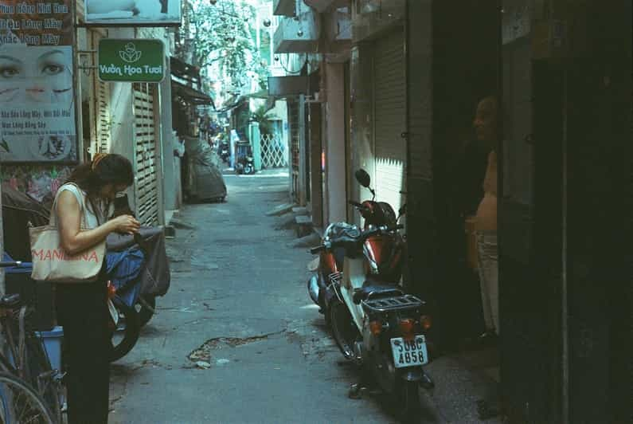

Ditulis Oleh:Claurisa Nindya 25 September 2026
Ketertarikan saya terhadap fotografi berawal dari kecintaan saya pada dunia seni. Bagi saya, seni merupakan salah satu bentuk ekspresi yang memberikan kebebasan bagi seseorang untuk menyampaikan ide, perasaan, imajinasi, dan cara pandangnya terhadap kehidupan. Saya selalu tertarik pada bagaimana sebuah karya dapat menyampaikan makna melalui perpaduan bentuk, warna, cahaya, dan komposisi. Seni mengajarkan saya bahwa keindahan tidak selalu harus terlihat sempurna atau megah, karena sesuatu yang sederhana pun dapat memiliki nilai dan makna tersendiri ketika dilihat dari sudut pandang yang berbeda.
Dari ketertarikan tersebut, saya mulai menemukan daya tarik dalam dunia fotografi. Saya melihat fotografi sebagai salah satu cabang seni yang memiliki cara unik dalam menangkap dan menyampaikan keindahan. Melalui sebuah foto, saya dapat mengabadikan momen, merekam suasana, serta menunjukkan bagaimana saya melihat dan merasakan sesuatu. Bagi saya, fotografi bukan hanya tentang mengambil gambar, tetapi juga tentang bagaimana sebuah visual dapat menceritakan sesuatu, membangun suasana, dan menyampaikan pesan tanpa harus dijelaskan melalui banyak kata
Bagi saya, dunia seni adalah ruang yang selalu menawarkan hal baru untuk dipelajari dan dieksplorasi. Melalui fotografi, saya ingin terus menemukan keindahan dalam berbagai hal, mengabadikan momen yang bermakna, dan menuangkan kreativitas ke dalam karya visual. Perjalanan ini menjadi bagian dari proses saya untuk terus belajar, berkembang, dan menemukan karakter serta cara pandang saya sendiri dalam dunia seni dan fotografi.